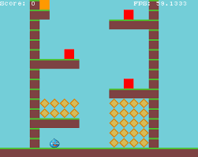

My Projects

This is my personal website built with HTML, CSS, and Bootstrap. It showcs my differnt projects, hobbies, and my resume.

My second project is a small 2-D game created entirely of C++ which incorporates randomness, classes, structs, and Object Oriented Programming.
Analyzed large datasets using Python and pandas to extract insights and visualize trends within tennis players. The model would predict thw winner of a certain tennis match by using past data and stats. This project improved my data handling and visualization skills.